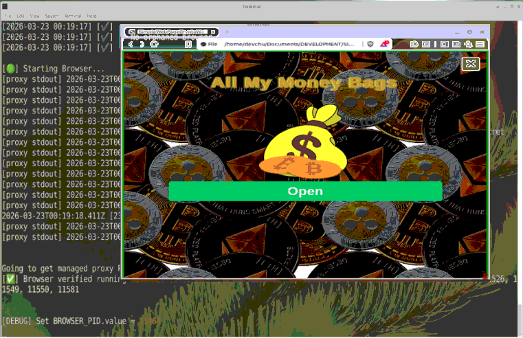
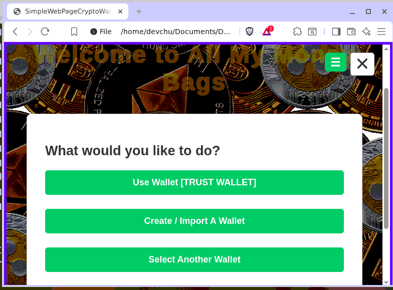
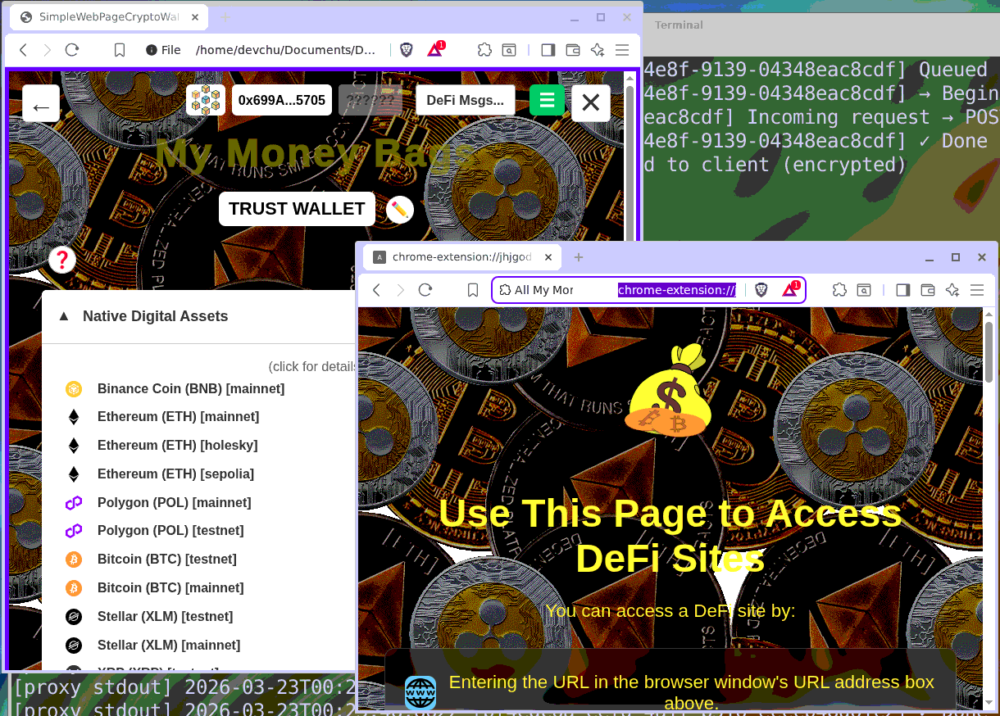
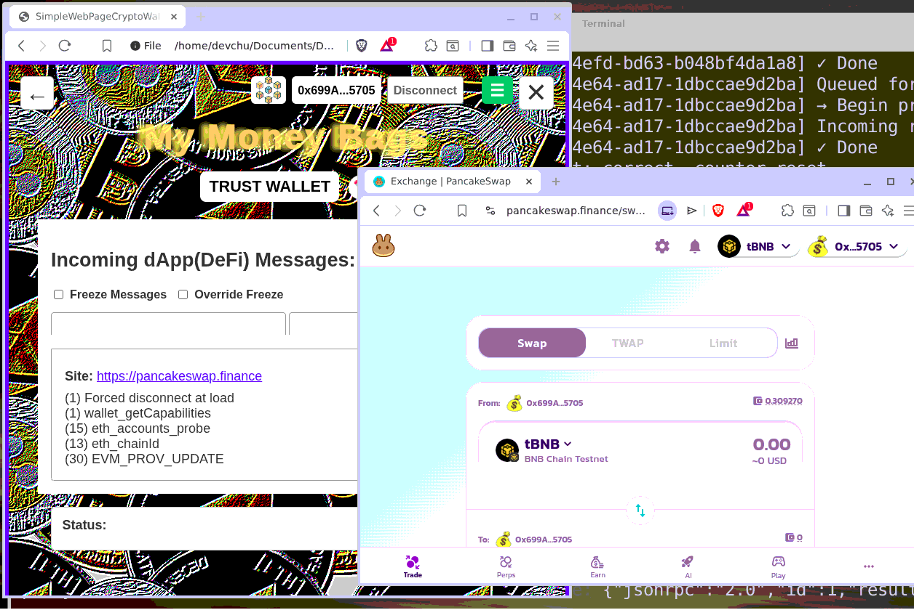

All My Money Bags (AMMB)
A Standalone, Local-First Multi-Chain Crypto Ecosystem
Project Status: Private Source / Developed via AI Orchestration
Executive Summary
AMMB is a high-security wallet architecture designed to eliminate supply-chain vulnerabilities. By enforcing a Zero-Third-Party model, the system operates entirely without CDNs or external runtimes, utilizing a hardened local environment on Linux.
Architectural Workflow
The system distinguishes between User-initiated actions and DApp-initiated requests, funneling both through a shared, hardened cryptographic core.
graph TD
A[DApp Window] <-->|Serialized Bridge| B[Browser Extension]
B <-->|Message Routing| C[Real Wallet file://]
C -->|Signing/Auth| D[Local RPC Proxy]
D -->|Sanitized Request| E[Blockchain Network]
graph TD
subgraph "Input Layer"
User[User-Initiated: Send/Receive]
DApp[DApp-Initiated: Remote Request]
end
subgraph "UI Strategy"
User --> ManualUI[Crypto-Agnostic UI Panels]
DApp --> DAppUI[Request Monitoring & Approval UI]
end
subgraph "The Shared Core Engine"
ManualUI --> AgnosticNet[Agnostic Network Layer]
DAppUI --> AgnosticNet
AgnosticNet --> CryptoNet[Crypto-Specific Network Layer]
CryptoNet --> CryptoLib[Crypto-Specific Libs: Sign/Derive]
CryptoLib --> ProxyClient[Agnostic Proxy Client]
end
ProxyClient --> ProxyServer[Local Node.js Proxy Server]
ProxyServer --> Blockchain[Blockchain Network]
Security Pillars
- Process Isolation: The Real Wallet UI runs as a restricted
file:// resource, isolated from the DApp's DOM.
- Transient Handshake: A custom Node.js lifecycle manager spawns the environment with one-time cryptographic secrets for inter-process authentication.
- Hardened Proxy: A local Node.js RPC proxy sanitizes all outgoing blockchain communications and tracks provider reliability telemetry.
- Serialized Bridge: DApp requests are strictly serialized (1-at-a-time) through a Manifest V3 messaging bridge to prevent parallel execution attacks.
A look into the "Local-First" environment, showing the decoupled UI and secure transaction flow.

System Initialization

Secure Wallet Management

Isolated DApp Interaction

Transaction Review & Signing
Technical Capabilities
Currently supporting 17+ protocols across EVM and Non-EVM chains:
- EVM: Ethereum, BSC, Polygon (POL).
- Non-EVM: Bitcoin (BTC), Ripple (XRP), Stellar (XLM).
- Assets: Comprehensive support for ERC20 and BEP20 token standards.